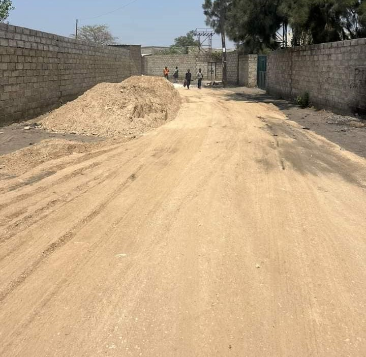
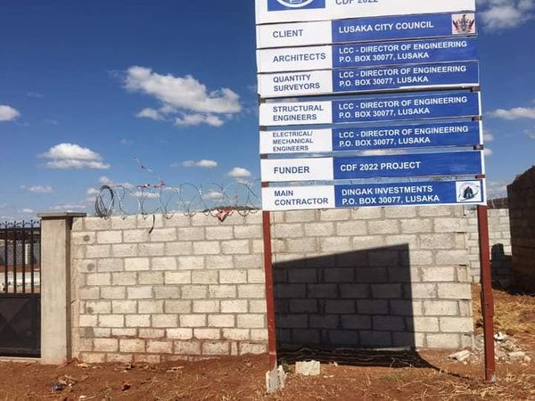
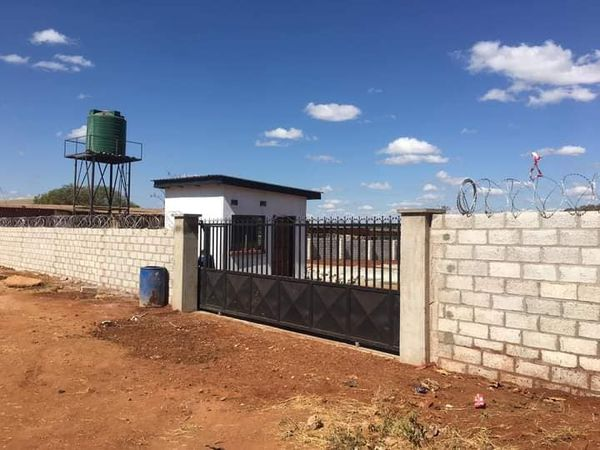
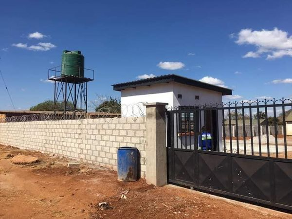
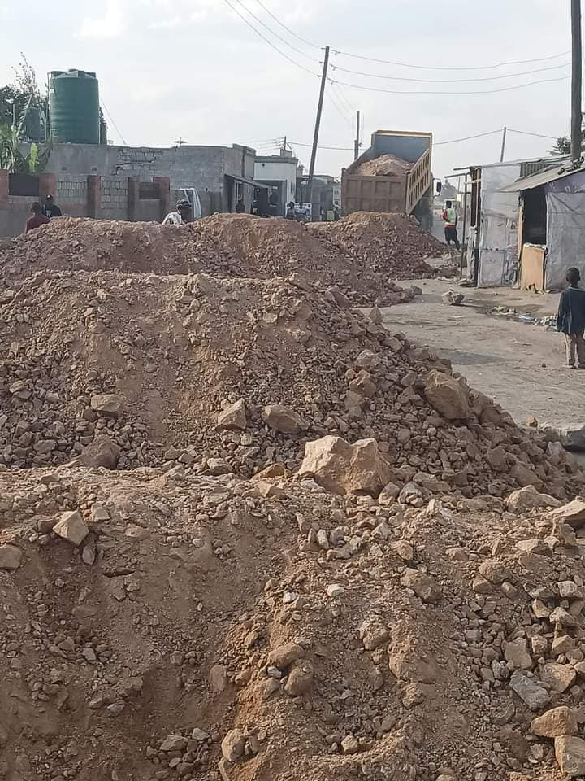

Project 1
FOUR OF THE SIX ROADS EARMARKED TO BE DONE IN KANYAMA CONSTITUENCY COMPLETED.
Lusaka City Council working with the Zambia National Service (ZNS) have completed four of the six urban roads funded under the 2022 Constituency Development Fund in Kanyama Constituency.
After inspecting the works by the LCC Engineering Department and ZNS, the local authority can confirm that the following roads are complete and ready for use;
1. Bit by bit road in Munkolo Ward 15
2. Mujomba Villa Clinic road in Makeni Villa Ward 14.
3. Water Trust-Self Help Clinic road in Kanyama Ward 13.
4. Chibolya Police road in Harry Mwaanga Nkumbula ward 12.
Meanwhile, works on the remaining two roads are progressing well.
The works yet to be completed are on the following roads;
1. Pepsi road in Garden Park ward 10.
2. Amaka Watch Tower road in Chinika ward 11.
The Zambia National Service is contracted to undertake the urban road projects under the CDF and are expected to complete the works soon.
source LCC...

Don't know you ward councilor ... click here
Project 2
LINDA HEALTH POST IN MUNKOLO WARD IS NOW 95% DONE.
It is very important to have A clean environment in our areas, Through the reports of our WDC leaders it was decided to upgrade the standard of Linda health post.
source...



Don't know you ward councilor ... click here
Project 3
REPORT ON COMMUNITY PROJECTS IN GARDEN PARK WARD 10
Works Completed:
1. Lucky Chance road, the 500 meters which was allocated for under 2021 CDF is done.
2. I managed to secure a piece of land 30 by 20 at green roof area a police post.
3. Water tank at plainview Market installed.
4. Managed to find a donor who will help to increase water supply by puting up 7 or more boreholes in all the seven zones in my ward.
Work Currently Being Attended to:
1. Police post at GT in Twin Park area is at 95 percent completion, this is under corporate social responsibility.
2. White wall fence to Kumwanza Market road and Ngwenya road at procurement stage and site visit was done last week.
3. Zesco working on the connection of power on the water tank for possible supply of clean drinking water to over one thousand (1000) House holds.
4. Lusaka city council is working on the container to be used as an office for the councillor and WDC as temporal measures.
5. I Wrote to the ministry of local government through Lusaka City council to build us 7.8 Kilometers roads to bituminous standard.
6. I wrote to the Ministry of Education to build as a government school.
7. Pepsi is constructing a clinic for the community and their workers which will operate 24/7, this is under Corporate social responsibility.
8. Septic tank at Plainview police under procurement.
9. Drainage at middle west under procurement.
10. To procure earth moving machines such as grader, TLB, Compactor and Tipper truck as Kanyama constituency so as to grade all the roads, under procurement.
note this report was for ward 10 other councillors will update you soon.
source...

Don't know you ward councilor ... click here
Project 4
null
Progress Bars
4 OF 6 ROADS DONE UNDER CDF (80%)
LINDA HEALTH POST IN MUNKOLO WARD IS NOW 95% DONE.
4 0F 10 HAVE BEEN COMPLETED